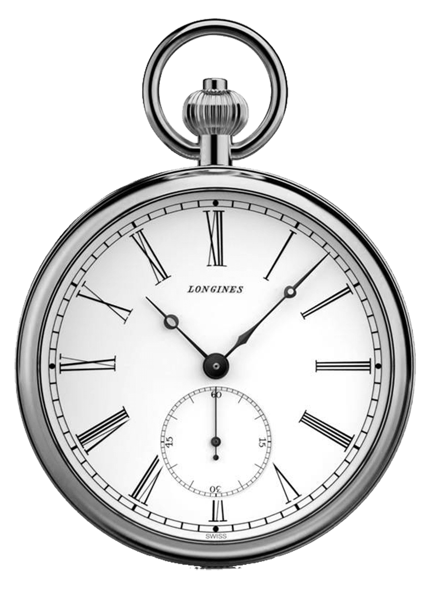
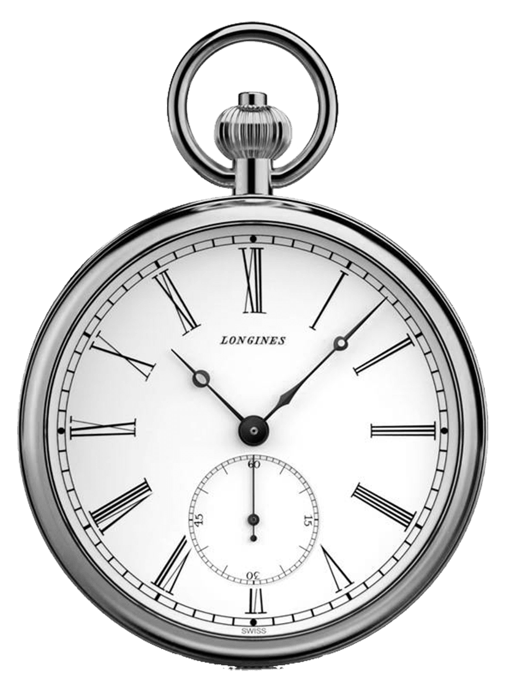

Geschichte
Erstmals wurde 1387 in Schwepnitz ein Herrensitz erwähnt. Auf diesen geht jedoch nicht das Schloss Schwepnitz, sondern das ehemals nahe gelegene Gutshaus Schwepnitz zurück. Das sich aus dem Herrensitz entwickelte Rittergut bezieht sich ebenfalls auf das Gutshaus. Das Schloss wurde später als zusätzlicher Bau errichtet.
1837 gelangte Ernst Heinrich Feurich in den Besitz des Grundstücks. Er ließ den Park umgestalten und 1848 nach einem Blitzschlag das Schloss als Neubau errichten. Die Freiherren von Rochow erwarben das Schloss 1883 von einem Herrn Eckelmann. Ihnen folgte Arndt von Wolffersdorf um 1900.
Im Herbst 1945 wurde Arndt von Wolffersdorf enteignet. Er floh mit seiner Frau 1952 in den Westen. Bis 1977 wurde Schloss Schwepnitz als Schule genutzt.
Nach einem Brand 1996 ist das Schloss nur noch als Ruine erhalten.
Geschichte
1387
Erstmals wurde 1387 in Schwepnitz ein Herrensitz erwähnt. Auf diesen geht jedoch nicht das Schloss Schwepnitz, sondern das ehemals nahe gelegene Gutshaus Schwepnitz zurück. Das sich aus dem Herrensitz entwickelte Rittergut bezieht sich ebenfalls auf das Gutshaus. Das Schloss wurde später als zusätzlicher Bau errichtet.